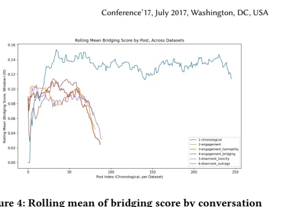
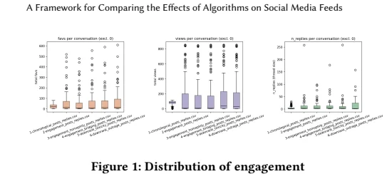

CORDA: A Common Testbed for Alternative Feed Rankers
Working paper, exploratory results · Code and supplementary material · Simulation dashboard
Question
Researchers have proposed many alternatives to engagement-based feed ranking, including chronological, bridging, diversity-oriented, and toxicity-aware methods. These proposals are spread across papers and evaluated with different datasets and metrics, so their reported effects are hard to compare. We asked how alternative ranking algorithms can be documented and compared under one set of policy-relevant measures.
Approach
CORDA has two parts. A catalog records, for each ranking method, its objective, required inputs, scoring rule, source paper, expected benefit, known trade-offs, and evaluation evidence. A common testbed implements selected methods in one simulated environment and compares them on shared measures.
In the first comparison, six Mastodon servers receive the same population of 3,000 LLM agents, the same interaction rules, and the same seed corpus of about 1,300 public posts about COVID-19. Agent personas are specified from European Social Survey and Eurostat data. Agents can post, reply, favorite, boost, or quote; each feed shows 20 posts selected from the 250 most recent. Each server uses a different ranking rule:
- Chronological: newest posts first.
- Engagement: ranks by replies, quotes, favorites, and boosts, weighting resharing more heavily.
- Bridging: raises posts approved by users with different interaction histories.
- Homophily: raises posts favored by users similar to the viewer (an intentional echo-chamber condition).
- Outrage downranking: lowers posts that combine moral language with anger or disgust.
- Toxicity downranking: lowers posts with higher toxicity scores.
Shared measures are engagement, conversation size, cross-group approval, moral outrage, toxicity and hate speech, and conspiracy content. Engagement is treated as both an outcome and an implementation constraint, since a ranker that sharply reduces participation is unlikely to be adopted.
Preliminary results
Current results come from a single exploratory run of 1,123 ticks; the planned experiment runs for 5,000 ticks with repeated runs.
- Engagement distributions overlapped across all six conditions.
- The outrage-downranking condition had a lower median outrage score than the chronological, engagement, and homophily conditions, although the distributions overlapped.
- Conspiracy scores varied sharply early in the run and then fell in all conditions; the toxicity-downranking condition showed the largest early spike.
- The chronological condition sustained the highest cross-group approval score, ahead of the bridging ranker. This raises a calibration or construct-validity question about the bridging measure or the ranker.


Policy relevance
The EU Digital Services Act requires very large platforms to assess systemic risks arising from their recommender systems (Article 34) and to adopt mitigation measures (Article 35). It also requires them to offer at least one recommender option not based on profiling (Article 38) and gives vetted researchers a route to platform data (Article 40). A catalog and common testbed could help researchers identify candidate mitigations, compare their trade-offs, and prepare evidence for a risk assessment or a data-access request. As part of the fellowship, we drafted a standardized summary label for each ranker keyed to the risks listed in Article 34(1)(a)–(d).
Limitations
- LLM agents are behavioral proxies; a study with human participants is needed to test which patterns hold in real use.
- Results describe one run without uncertainty estimates.
- The measures are proxies for bridging, outrage, toxicity, and conspiracy content.
- Personas use 2023 survey data, while the simulated discussion is set in 2020.